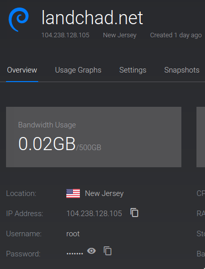

At this point, we should have a domain name and a server and the domain name should direct to the IP address of the server with DNS records. As I said in previous articles, the instructions I will give will be for Debian. In this article, other distributions might work a little differently.
Logging in to the server
We first want to log into our VPS to get a command prompt where we can set up the web server. I am assuming you are using either MacOS or GNU/Linux and you know how to open a terminal. On Windows, you can also use either PuTTY or the Windows Subsystem for Linux.
Now on Vultr's site, you can click on your VPS and you will see that there is an area that shows you the password for your server at the bottom here.
Now pull up a terminal and type:
ssh root@example.orgThis command will attempt to log into your server. It should prompt you for your password, and you can just copy or type in the password from Vultr's site.
Installing the Webserver: Nginx
If the program runs without an error, ssh has now logged you into your server.
Let's start by running the following commands.
apt update
apt upgrade
apt install nginxThe first command checks for packages that can be updated and the second command installs any updates.
The third command installs nginx (pronounced Engine-X) which is the web server we'll be using,
along with some other programs.
Our nginx configuration file
nginx is your webserver.
You can make a little website or page, put it on your VPS and then tell nginx where it is and how to host it on the internet.
It's simple. Let's do it.
First, let's create the settings for our website. You can copy and paste (with required changes) but I will also explain what the lines do.
Create a file in /etc/nginx/sites-available by doing this:
nano /etc/nginx/sites-available/mywebsite
Note that "nano" is a command line text editor.
You will now be able to create and edit this file.
By saving, this file will now appear.
Note also I name the file mywebsite, but you can name it whatever you'd like.
I'm going to add the following content to the file. The content like this will be different depending on what you want to call your site.
server {
listen 80 ;
listen [::]:80 ;
server_name landchad.net ;
root /var/www/landchad ;
index index.html index.htm index.nginx-debian.html ;
location / {
try_files $uri $uri/ =404 ;
}
}Create the directory and index for the site
We'll actually start making a "real" website later, but let's go ahead and create a little page that will appear on when someone looks up the domain.
mkdir /var/www/landchadNow let's create and index file inside of that directory which will appear when the website is accessed:
nano /var/www/landchad/index.htmlI'll add the following basic content, but you can add whatever you want. This will appear on your website.
<!DOCTYPE html>
<h1>My website!</h1>
<p>This is my website. Thanks for stopping by!</p>
<p>Now my website is live!</p>Enable the site
Once you save that file, we can enable it making a link to it in the sites-enabled directory:
ln -s /etc/nginx/sites-available/mywebsite /etc/nginx/sites-enabled
Now we can just reload or restart to make nginx service the new configuration:
systemctl reload nginxThe Firewall
Vultr and some other VPS automatically install and enable ufw, a firewall program.
This will block basically everything by default, so we have to change that.
If you don't have ufw installed, you can skip this section.
Option 1: Disable the firewall entirely...
It's usually easier to just entirely disable the firewall as we set up different services. But be sure to see the article on how to fully configure the firewall later.
systemctl stop ufw
systemctl disable ufwOption 2: Or enable the proper ports.
We can also simply manually disable the blocking of connections over HTTP and HTTPS. This keeps the firewall otherwise active.
ufw allow 80
ufw allow 443Port 80 is the canonical webserver port, while 443 is the port used for encrypted connections. We will certainly need that for the next page.
Nginx security hint
By default, Nginx and most other webservers automatically show their version number on error pages.
It's a good idea to disable this from happening because if an exploit comes out for your server software, someone could exploit it. Open the main Nginx config file /etc/nginx/nginx.conf and find the line # server_tokens off;. Uncomment it, and reload Nginx.
Remember to keep your server software up to date to get the latest security fixes!
We now have running website!
At this point you can now type in your website in your browser and this webpage will appear!

Note the "Not secure" notification. The next brief step is securing encrypted connections to your website.
Previous: Set up DNS. Next: Enabling Encrypted Connections.